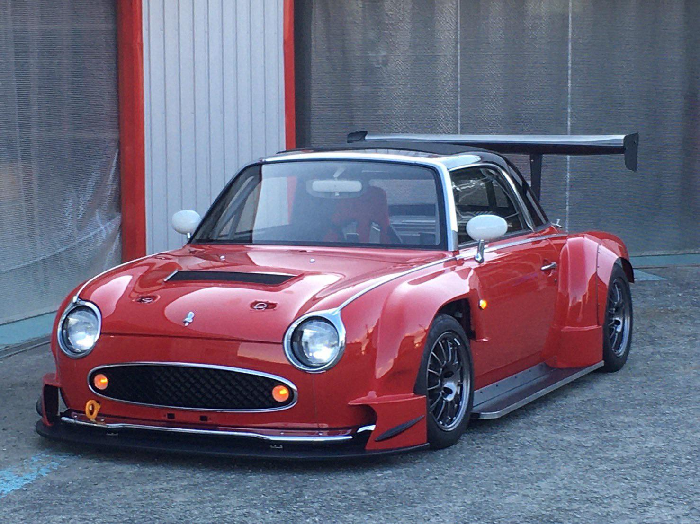
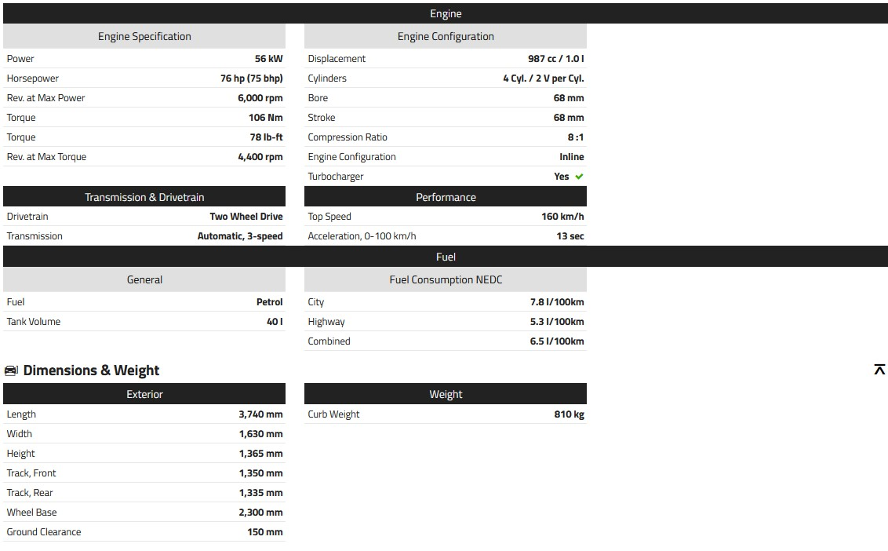

Nissan Figaro

The Nissan Figaro debuted at the 1989 Tokyo Motor Show, marketed with the slogan "Back to the Future." Produced from 1991 to 1992 by Nissan's Pike Factory, it was part of a series including Be-1, Pao, and S-Cargo. With only four color options, including the now coveted Topaz Mist, Figaro gained popularity quickly, with 8,000 units produced and 12,000 more to meet demand in under two years. Equipped with leather seats, air conditioning, and a retractable roof, Figaro offers a nostalgic yet modern driving experience. Its turbocharged 1.0-liter engine provides efficient performance, with a three-speed automatic gearbox. Imported from Japan, Figaro benefits from lower mileage, higher specifications, and minimal corrosion, making it an attractive option for enthusiasts.
